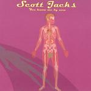

| Artist: | Scott Jacks |
| Title: | You Know Me By Now |
| Label: | self produced |
| Length(s): | minutes |
| Year(s) of release: | 2003 |
| Month of review: | [09/2004] |
| 1) | Providence | 3.14 |
| 2) | Film Star | 7.02 |
| 3) | Where Do You Think You're Headed Billy? | 4.19 |
| 4) | Wintertime Blues | 3.13 |
| 5) | You Know Me By Now | 4.26 |
| 6) | No One Knows Their Names | 3.14 |
| 7) | For Michael Hedges | 3.41 |
| 8) | 9 In Essence | 5.05 |
| 9) | Innocent Love | 2.43 |
| 10) | This Tired Old Face | 3.12 |
| 11) | Neilishon 4 | 3.20 |
| 12) | The China Dream | 3.07 |
| 13) | ?? | 0.06 |
| 13) | Sure Short Motors | 3.28 |
The piano opens Where Do You Think You're Headed Billy? and it like its successor, Wintertime Blues are dreamy tunes, which sometimes may remind you of the acoustic vocal tracks of Genesis, a bit of a For Absent Friends feel, but that is the only prog link I can establish. You Know Me By Now continues in the same vein: nothing to get excited about, nothing to get worked up about. In fact, the songs are all quite fine, although the execution and vocals are a bit flat. On the other hand, that may be exactly what fits well with the songs. The melodies can be quite subtle, and a song such as the title track has some flute for variety.
No One Knows Their Names is more like a neo-prog tune, the way it opens. Too bad it all sounds a bit flat and mechanical. It should not be surprising that For Michael Hedges features only acoustic guitar. 9 In Essence moves into newer areas of music with a heavier beat and Ozrics style gurgling keyboards. Later it turns into something of a jazzrock tune, plenty of meandering here. The final passage is quite eerie.
Innocent Love is back to the song material, with a bit of a jazz feel, or maybe 10cc. This Tired Old Face has some nice bass work, giving the song some pulse. Here, the name Todd Rundgren comes to mind.
Neilishon 4, I guess, might have something to do with Neal Schon. Like the tribute to Hedges, this is acoustic guitar, nicely melodic and very friendly. With The China Dream, the piano is the dominating factor, and that usually tells me more than acoustic guitar. A melancholic tune, with nice harmonizing vocals, a bit in the vein of CSNY. Sure Short Motors is preluded by a six second bonus track. It is the closest we come to a rock track. Rather straightforwarded rock most times, but also with some quirky interludes and variations.